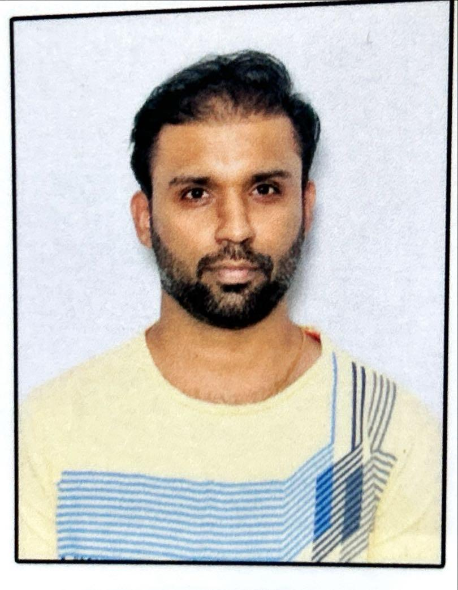

Engineer of borderless systems - from education to healthcare to global SaaS
sridhar.belagod@yahoo.co.in
LinkedIn - www.linkedin.com/in/sridhar-belagod
I've spent 10+ years building and scaling backend systems across healthcare, education, and B2B SaaS. I thrive on creating products from scratch taking ideas from concept to launch and have hands-on experience designing APIs, architecting distributed systems, and working with cross-functional teams. From launching mClinica (now SwipeRx) in India and the Philippines to developing DocBuddy's mobile and back-office platforms, I've learned how to balance speed, scalability, and user needs while shaping impactful products. I also share my experiences and insights through my technology blog, reflecting on lessons learned while building products and engineering teams.
In more recent roles, I've focused on scaling SaaS platforms optimizing API performance by 50%, safely migrating 10M+ records, and building resilient systems with Rails, gRPC, and AWS. I quickly adapt to unfamiliar stacks, picking up technologies like Cassandra and ElasticSearch hands-on, and I'm excited to bring that same adaptability to new challenges.
Outside of work, I'm a proud father of a wonderful daughter who keeps me on my toes, and I enjoy unwinding by playing games on my PlayStation. I believe balancing family, hobbies, and work fuels creativity and resilience in everything I do.
At Dealfront, I work on Web Visitors, a product that helps customers understand and act on the companies visiting their websites. My focus is on building and maintaining the backend systems that power visitor timelines, automation, and reporting. Some of my key contributions include:
These experiences have sharpened my ability to deliver reliable features end-to-end, coordinate across teams, and ensure scalability in a fast-moving product environment.
I'm drawn to Circle because of the way you empower creators and communities to thrive without friction. Over the years, I've seen firsthand how meaningful connections can transform a product from connecting pharmacies and patients in emerging markets to building platforms that help practitioners deliver better care. The idea of helping shape Discover into a marketplace where communities and creators can find value, connect, and grow excites me. I also thrive in autonomous, async-first environments, where iteration speed and accountability matter more than titles or proximity. Circle's culture of empowering teams to move fast, experiment, and own outcomes resonates deeply with how I've worked most effectively throughout my career.
Circle's stack may include Next.js, TypeScript, Rails, Postgres, and Tailwind, my strength lies in backend engineering with Ruby on Rails, Postgres, gRPC, and AWS. I've also worked full-stack using ReactJS and am comfortable contributing to frontend tasks as needed. I'm confident in my ability to quickly learn new technologies to support full-stack initiatives. With enough miles logged across tech stacks, I know that languages and frameworks change, but the ability to design, build, and ship reliable, scalable systems doesn't.